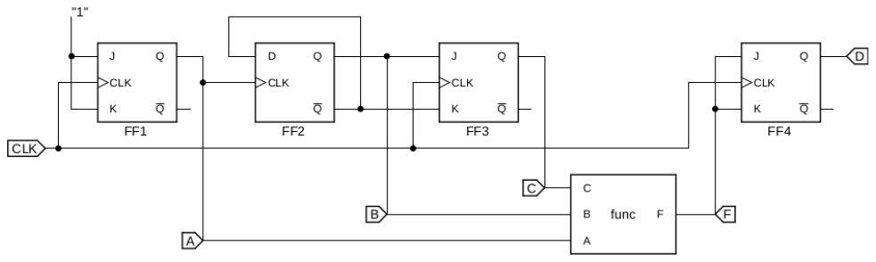
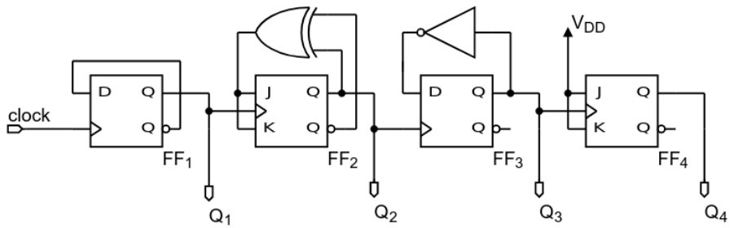
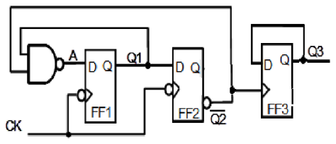

11. Mashq: flip-flop va sinxron sxemalar
Eslatma: uchta asosiy qoida
- Front lahzasida hamma FF frontdan oldingi (eski) qiymatlarni oladi.
- JK: 00 saqla, 01 → 0, 10 → 1, 11 almashtir. J = K = X bo'lsa: X = 1 da almashadi, X = 0 da saqlaydi. J = X, K = X̄ bo'lsa: Q ← X (D FF kabi).
- Fmax: T ≥ tCKQ + tlogic,max + tSU (eng uzun yo'l). Front turlari aralash bo'lsa T/2. tH Fmax ga kirmaydi.
1-masala: 2020-09 imtihoni (7 ball)

Yechimni ko'rish
1-qadam, sxemani o'qish (rasmiy yechimdagi tushuntirish bilan bir xil):
- FF1 (JK): J = K = "1", takti CLK → A har frontda almashadi.
- FF2 (D): D = Q̄ (toggle), takti A dan → B har safar A 0 dan 1 ga o'tganda almashadi, ya'ni har 2 taktda.
- FF3 (JK): J = B, K = B̄, takti CLK → C ← B, ya'ni C = B ning bir takt kechikkan nusxasi.
- FF4 (JK): J = K = F, takti CLK → D chiqishi F = 1 bo'lgan taktdan keyin almashadi, F = 0 bo'lsa saqlanadi.
2-qadam, jadval:
| Takt | A | B | C | F = B·C̄ + Ā | D |
|---|---|---|---|---|---|
| 0 | 0 | 0 | 0 | 1 | 0 |
| 1 | 1 | 1 | 0 | 1 | 1 |
| 2 | 0 | 1 | 1 | 1 | 0 |
| 3 | 1 | 0 | 1 | 0 | 1 |
| 4 | 0 | 0 | 0 | 1 | 1 |
| 5 | 1 | 1 | 0 | 1 | 0 |
| 6 | 0 | 1 | 1 | 1 | 1 |
| 7 | 1 | 0 | 1 | 0 | 0 |
| 8 | 0 | 0 | 0 | 1 | 0 |
| 9 | 1 | 1 | 0 | 1 | 1 |
D ustunini qanday to'ldirdik: har taktda D = (oldingi D) XOR (oldingi F). Masalan 4-takt: oldingi D = 1, oldingi F = 0 → saqlaydi → D = 1. 5-takt: oldingi D = 1, oldingi F = 1 → almashadi → D = 0.
Javob: D 1, 3, 4, 6, 9-taktlarda 1. Rasmiy javob ham shunday.
2-masala: 2021-06 imtihoni (7 ball)
1) Calculate the maximum frequency of the "clock" signal FMAX = ... MHz (3 points) at which the circuit operates correctly and keeps stable each state for at least half of the clock period.
2) How does the maximum clock frequency FMAX change if both the setup time tSU and hold time tH halve? (2 points) — FMAX is unchanged / FMAX increases / FMAX decreases
3) How does the maximum clock frequency FMAX change if the setup time increases by 0.5 ns, tSU = 2 ns, and the clock input to the Q output propagation time decreases by 0.5 ns, tCKQ = 2 ns? (2 points) — FMAX decreases / FMAX increases / FMAX is unchanged

Yechimni ko'rish
Asosiy kuzatish: bu sxemada har bir FF ning chiqishi keyingi FF ning taktiga ulangan (asinxron zanjir, 9-dars, 2-bo'lim). Demak kechikishlar qo'shilib boradi. Eng yomon holat: hamma chiqish o'zgaradi (0000 → 1111). Unda Q1 frontdan tCKQ keyin, Q2 yana tCKQ keyin va hokazo. Q4 frontdan 4·tCKQ keyin barqarorlashadi.
1-qism. Shart: yangi holatga erishish (4·tCKQ) + holatni ushlab turish (T/2) bir davrga sig'ishi kerak:
T = T/2 + 4·tCKQ → T/2 = 4·tCKQ → T = 8·tCKQT = 8 × 2.5 = 20 ns → FMAX = 1000 / 20 = 50 MHz.
2-qism. Formulada tSU va tH umuman yo'q. Ularni yarimga kamaytirish hech narsani o'zgartirmaydi → FMAX is unchanged.
3-qism. tSU o'zgarishi yana ta'sir qilmaydi. tCKQ = 2 ns → T = 8 × 2 = 16 ns → FMAX = 62.5 MHz → FMAX increases.
3-masala: 050-savol (va 007)

Yechimni ko'rish
Sxemani o'qish:
- FF1 va FF2 takt kirishida doiracha bor → ikkalasi ham ↓ frontda ishlaydi.
- A = NAND(Q1, Q̄2). FF1: D = A. FF2: D = Q1.
- FF3: takti Q̄2 dan, lekin D si o'zining Q chiqishiga ulangan (Q̄ ga emas!). D = Q bo'lsa FF har frontda o'z qiymatini qayta yozadi, ya'ni hech qachon o'zgarmaydi. Q3 boshida 0 → doim 0. Bu tuzoq: bo'lgichga o'xshaydi, lekin bo'lgich emas.
| Holat | Q1 | Q2 | Q̄2 | A = NAND(Q1, Q̄2) |
|---|---|---|---|---|
| Boshlanish | 0 | 0 | 1 | 1 |
| ↓1 dan keyin | 1 | 0 | 1 | 0 |
| ↓2 dan keyin | 0 | 1 | 0 | 1 |
| ↓3 dan keyin | 1 | 0 | 1 | 0 |
| ↓4 dan keyin | 0 | 1 | 0 | 1 |
4-masala: 017-savol, kechikishlar bilan
Sxema 054 va 069 bilan bir xil (8-dars, 9-dars): FF1 ↑ frontda, FF2 ↓ frontda, A = NAND(Q1, Q2).
Yechimni ko'rish
Mantiq 9-darsdagi 069 bilan bir xil. Farqi: har o'zgarish kechikib keladi.
- FF chiqishi frontdan 5 ns keyin o'zgaradi.
- A esa Q1 yoki Q2 o'zgargandan 3 ns keyin o'zgaradi.
Bu rasmiy yechimdagi diagramma bilan bir xil. Chizishda har o'zgarishni sababchi frontdan strelka bilan ko'rsating va ustiga kechikishni yozing.
Bazadagi 16 ta flip-flop savoli: hammasi bir joyda
| № | Mavzu | Javob | Qayerda |
|---|---|---|---|
| 004 | High-level latch, LE = 1 | c) chiqish kirishni kuzatadi | 7-dars |
| 088 | High-level latch, LE = 0 | c) chiqish o'zgarmaydi | 7-dars |
| 092 | Low-level latch, LE = 1 | b) chiqish o'zgarmaydi | 7-dars |
| 055 | JK, J = K = 1 | c) har taktda almashadi | 7-dars |
| 103 | Asinxron active low reset, RST = 0 | d) chiqish doim 0 | 7-dars |
| 039 | Fmax, NAND | 2 + 5 + 3 = 10 ns → 100 MHz | 8-dars |
| 099 | Fmax, NAND | 5 + 3 + 5 = 13 ns → 77 MHz | 8-dars |
| 054 | Fmax, ↑ va ↓ aralash | T/2 = 5 + 3 + 4 = 12 ns → 41.6 MHz | 8-dars |
| 104 | Fmax, D va JK | 6 + 7 + 2 = 15 ns → 66.7 MHz | 8-dars |
| 087 | Fmax va hold | 1 GHz; hold buzilishi yo'q (0.2 > 0.15) | 8-dars |
| 069 | Vaqt diagrammasi, ↑ va ↓ | A = 0 faqat Q1 = Q2 = 1 da; Q3 2 ga bo'ladi | 9-dars |
| 023 | Vaqt diagrammasi, D, D, JK | Q3: 1 va 4-taktlarda 1; F: 2 va 5-taktlarda 0 | 9-dars |
| 050 | Vaqt diagrammasi | Q1, A har ↓ da almashadi; Q3 doim 0 | shu dars |
| 007 | 050 bilan bir xil, 5 takt | xuddi shu usul | shu dars |
| 017 | Kechikishli diagramma | Q: +5 ns, A: +3 ns | shu dars |
| 115 | Pass-gate MUX tranzistor sxemasi | har kirishga CMOS uzatish kaliti (NMOS + PMOS) | 6-dars (CMOS) |
O'zingizni tekshiring
Javob
F = Ā: 0-taktdan boshlab 1, 0, 1, 0, ... D: oldingi F = 1 bo'lsa almashadi. D: 1-takt 1, 2-takt 1 (F edi 0), 3-takt 0, 4-takt 0, 5-takt 1, 6-takt 1, 7-takt 0, 8-takt 0, 9-takt 1. Javob: 1, 2, 5, 6, 9.Javob
T = 8 × 3 = 24 ns → 41.7 MHz.Javob
Q2 4 ns da, A yana 2 ns dan keyin: 6 ns.Javob
Hech narsa: o'z qiymatini qayta yozadi. Toggle uchun D = Q̄ bo'lishi kerak.📝 Konspekt (daftarga yozib oling)
Masala turlari va usul
- "Qaysi taktlarda D = 1?" → jadval: takt, Q lar, F, D. D = F ni 1 takt kechiktiradi (D FF) yoki F = 1 da almashadi (JK, J = K = F).
- "Signal chastotasi?" → jadvaldan takrorlanish uzunligi, f = fCLK / uzunlik.
- "Fmax?" → eng uzun yo'l; ↑/↓ aralash bo'lsa T/2; asinxron zanjirda kechikishlar qo'shiladi (n·tCKQ).
- "Kechikishli diagramma" → har o'zgarish: frontdan +tCKQ, element orqali yana +tP.
Tez-tez uchraydigan ulanishlar
- D = Q̄ → toggle (2 ga bo'lgich). D = Q → hech qachon o'zgarmaydi.
- JK: J = K = 1 → toggle; J = K = X → X = 1 da toggle; J = X, K = X̄ → Q ← X.
- Takt boshqa FF ning chiqishidan → asinxron hisoblagich.
Imtihon javoblari
- 2020-09 → 1, 3, 4, 6, 9-taktlar. 2021-06 → 50 MHz; tSU, tH yarimga → o'zgarmaydi; tCKQ = 2 ns → ortadi.